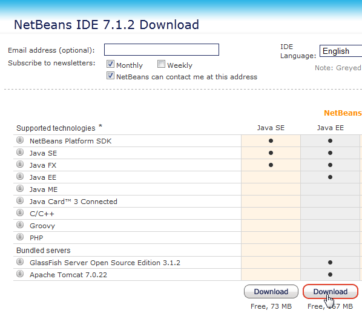
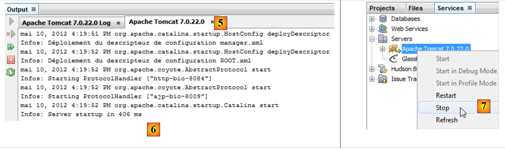
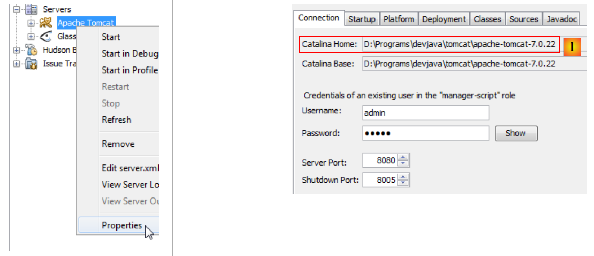
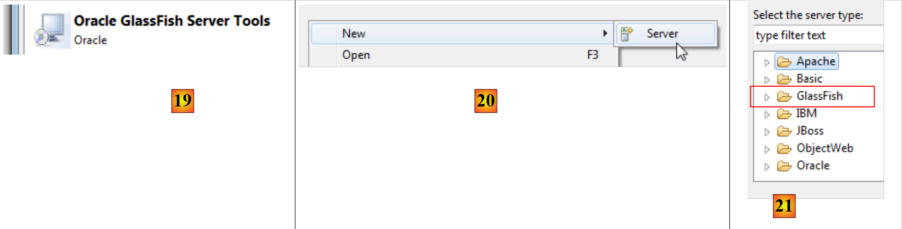
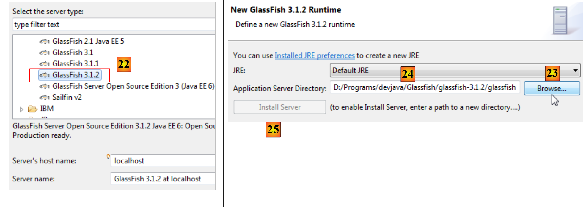
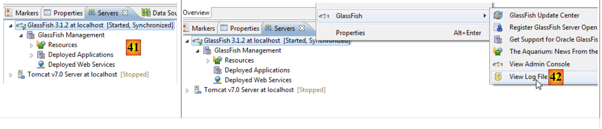
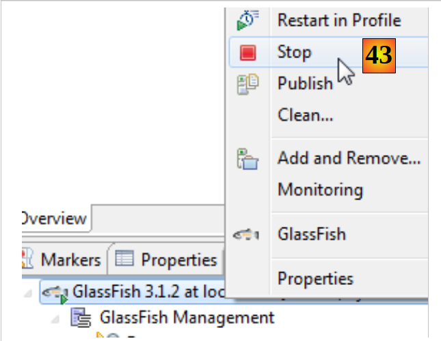

1. Introduction
1.1. Overview
The PDF of this document is |HERE|.
The examples in this document are available |HERE|.
Here, we aim to introduce, using examples
- the Java Server Faces 2 (JSF2) framework,
- the PrimeFaces component library for JSF2, for desktop and mobile applications.
This document is primarily intended for students and developers interested in the PrimeFaces component library [http://www.primefaces.org]. This framework offers dozens of AJAX-enabled components [http://www.primefaces.org/showcase/ui/home.jsf] that allow you to build web applications with a look and feel similar to desktop applications. PrimeFaces is based on JSF2, hence the need to first introduce this framework. PrimeFaces also offers specific components for mobile devices. We will cover those as well.
To illustrate our point, we will build an appointment scheduling application in different environments:
- a classic web application using JSF2 / EJB3 / JPA technologies on a GlassFish 3.1 server,
- the same application with AJAX support, using PrimeFaces technology,
- and finally, a mobile version using PrimeFaces Mobile technology.
Each time a version is built, we will deploy it to a JSF2 / Spring / JPA environment on a Tomcat 7 server. We will therefore build six Java EE applications.
This document covers only what is necessary to build these applications. Therefore, do not expect it to be exhaustive—you won’t find that here. Nor is it a collection of best practices. Experienced developers may find that they would have done things differently. I simply hope that this document is not a collection of bad practices either.
To learn more about JSF2 and PrimeFaces, you can use the following reference :
- [ref1]: Java EE5 Tutorial [http://java.sun.com/javaee/5/docs/tutorial/doc/index.HTML], the Sun reference for learning Java EE5. Read Part II [Web Tier] to explore web technology, particularly JSF. The tutorial examples can be downloaded. They come in the form of NetBeans projects that can be loaded and run,
- [ref2]: Core JavaServer Faces by David Geary and Cay S. Horstmann, third edition, published by McGraw-Hill,
- [ref3]: PrimeFaces documentation [http://primefaces.googlecode.com/files/primefaces_users_guide_3_2.pdf],
- [ref4]: PrimeFaces Mobile documentation: [http://primefaces.googlecode.com/files/primefaces_mobile_users_guide_0_9_2.pdf].
We will occasionally refer to [ref2] to indicate to the reader that they can explore a topic in greater depth using this book.
This document has been written to be accessible to as wide an audience as possible. The prerequisites for understanding it are as follows:
- knowledge of the Java language,
- basic knowledge of Java EE development.
All the resources needed to meet these prerequisites can be found on the website [https://developpez.com]. Some of them can be found on the website [https://tahe.developpez.com]:
- [ref5]: Introduction to Web Programming in Java (September 2002): covers the basics of web programming in Java: servlets and JSP pages,
- [ref6]: The Basics of MVC Web Development in Java (May 2006) []: recommends developing web applications using three-tier architectures, where the web tier implements the MVC (Model, View, Controller) design pattern.
- [ref7]: Introduction to Java EE 5 (January 2012).
- [ref8]: Java Persistence in Practice (June 2007). This document provides an introduction to data persistence using JPA (Java Persistence API).
- [ref9]: Building a Java EE Web Service with NetBeans and the GlassFish Server (January 2009). This document explores the process of building a web service. The sample application discussed in this document is taken from [ref9].
1.2. Sample
The examples in this document are available |HERE| as Maven projects for both NetBeans and Eclipse:
 |
To import a project into NetBeans:
 |
- In [1], open a project,
- in [2], select the project to open in the file system,
- in [3], it opens.
With Eclipse,
 |
- in [1], import a project,
- in [2], the project is an existing Maven project,
 |
 |
- in [3]: you select it in the file system,
- in [4]: Eclipse recognizes it as a Maven project,
- in [5], the imported project.
1.3. Tools used
Moving forward, we are using (as of May 2012):
- the NetBeans 7.1.2 IDE (Integrated Development Environment) available at [http://www.netbeans.org],
- the Eclipse Indigo IDE [http://www.eclipse.org/] in its customized SpringSource Tool Suite (STS) form [http://www.springsource.com/developer/sts],
- PrimeFaces version 3.2, available at [http://primefaces.org/],
- PrimeFaces Mobile version 0.9.2, available at [http://primefaces.org/],
- WampServer for the MySQL database [http://www.wampserver.com/].
1.3.1. Installing the NetBeans IDE
Here we describe the installation of NetBeans 7.1.2, available at the URL [http://netbeans.org/downloads/].
 |
You can choose the Java EE version with both GlassFish 3.1.2 and Apache Tomcat 7.0.22. The former allows you to develop Java EE applications with EJB3 (Enterprise JavaBeans), and the latter allows you to develop Java EE applications without EJB. We will then replace the EJBs with the Spring framework [http://www.springsource.com/].
Once the NetBeans installer has been downloaded, run it. To do this, you must have a JDK (Java Development Kit) [http://www.oracle.com/technetwork/java/javase/overview/index.HTML]. In addition to NetBeans 7.1.2, install:
- the JUnit framework for unit testing,
- the GlassFish 3.1.2 server,
- the Tomcat 7.0.22 server.
Once the installation is complete, launch NetBeans:
 |
- in [1], NetBeans 7.1.2 with three tabs:
- the [Projects] tab displays the open NetBeans projects;
- the [Files] tab displays the various files that make up the open NetBeans projects;
- the [Services] tab groups together a number of tools used by NetBeans projects,
- in [2], select the [Services] tab, and in [3], select the [Servers] section;
- in [4], launch the Tomcat server to verify that it is installed correctly,
 |
- in [6], in the [Apache Tomcat] tab [5], you can verify that the server has started correctly,
- In [7], stop the Tomcat server,
Follow the same steps to verify that the GlassFish 3.1.2 server is installed correctly:
 |
- In [8], start the GlassFish server,
- In [9], verify that it has started correctly,
 |
- in [10], stop it.
We now have a fully functional IDE. We can start building projects. As we work on these projects, we’ll explore various features of the IDE.
We will now install the Eclipse IDE and register the two servers—Tomcat 7 and GlassFish 3.1.2—that we just downloaded within it. To do this, we need to know the installation directories for these two servers. This information can be found in the properties of these two servers:
 |
- in [1], the installation folder for Tomcat 7,
 |
- in [2], the GlassFish server domains folder. When registering GlassFish in Eclipse, you will only need to provide the following information [D:\Programs\devjava\Glassfish\glassfish-3.1.2\glassfish]. ### 1.3.2. Installing the Eclipse IDE
Although Eclipse is not the IDE used in this document, we will nevertheless describe its installation. This is because the examples in the document are also provided as Maven projects for Eclipse. Eclipse does not come with Maven pre-installed. You must install a plugin to do this. Rather than installing a bare-bones Eclipse, we will install SpringSource Tool Suite [http://www.springsource.com/developer/sts], an Eclipse pre-equipped with numerous plugins related to the Spring framework as well as a pre-installed Maven configuration.
 |
- Go to the SpringSource Tool Suite (STS) website [1] to download the current version of STS [2A] [2B].
 |
 |
- The downloaded file is an installer that creates the file directory structure [3A] [3B]. In [4], we launch the executable,
- in [5], the IDE workspace after closing the welcome window. In [6], display the application servers window,
 |
- in [7], the servers window. A server is registered. It is a VMware server that we will not use. In [8], we call up the wizard for adding a new server,
 |
- in [9A], various servers are offered. We choose to install an Apache Tomcat 7 server [9B],
 |
- in [10], we specify the installation directory for the Tomcat 7 server installed with NetBeans. If you do not have a Tomcat server, use the button [11],
- in [12], the Tomcat server appears in the [Servers] window,
 |
- in [13], we start the server,
- in [14], it is running,
- in [15], we stop it.
In the [Console] window, you should see the following Tomcat logs if everything is working properly:
 |
- Still in the [Servers] window, add a new server [16],
- in [17], the Glassfish server is not listed,
- in this case, use the link [18],
 |
- in [19], choose to add an adapter for the GlassFish server,
- it is downloaded, and back in the [Servers] window, add a new server,
- this time in [21], the GlassFish servers are listed,
 |
- in [22], select the GlassFish 3.1.2 server downloaded with NetBeans,
- in [23], specify the GlassFish 3.1.2 installation folder (pay attention to the path indicated in [24]),
- if you do not have a GlassFish server, use the [25] button,
 |
- in [26], the wizard asks for the GlassFish server administrator password. For a first installation, this is normally adminadmin,
- once the wizard is finished, the GlassFish server appears in the [Servers] window [27],
 |
- in [28], launch it,
- in [29], a problem may arise. This depends on the information provided during installation. GlassFish requires a JDK (Java Development Kit) and not a JRE (Java Runtime Environment),
- to access the GlassFish server properties, double-click on it in the [Servers] window,
- which opens the [20] window; there, follow the [Runtime Environment] link,
 |
- in [31], we will replace the default JRE with a JDK. To do this, use the [32] link,
- in [33], the JREs installed on the machine,
- in [34], add another one,
 |
- In [35], select [Standard VM] (Virtual Machine),
- in [36], select a JDK (>=1.6),
- in [37], enter a name for the new JRE,
 |
- Back at the JRE selection screen for GlassFish, select the new JRE specified in [38],
- once the configuration wizard is complete, restart [Glassfish] [39],
- in [40], it launches,
 |
- in [41], the server directory tree,
- in [42], we access the GlassFish logs:
 |
- In [43], we stop the Glassfish server.
1.3.3. Installation of [ WampServer]
[WampServer] is a software suite for developing in PHP/MySQL/Apache on a Windows machine. We will use it solely for the MySQL DBMS.
 |
- On the [WampServer] website [1], choose the appropriate version [2],
- the downloaded executable is an installer. Various pieces of information are requested during installation. These do not concern MySQL, so they can be ignored. Window [3] appears at the end of the installation. Launch [WampServer],
 |
- in [4], the [WampServer] icon appears in the taskbar at the bottom right of the screen [4],
- when you click on it, the [5] menu appears. It allows you to manage the Apache server and the MySQL DBMS. To manage the latter, use the [PhpMyAdmin] option,
- which opens the window shown below,

We will provide few details on using [PhpMyAdmin]. We will simply show how to use it to create the database for the example application in this tutorial.